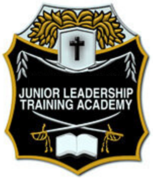

NW Royal Rangers Academy

The Academy Program, or JLDA, is an advanced leadership and skill training initiative designed to equip young men with the tools to mentor others, grow spiritually, and excel in outdoor and ministry-related activities. It emphasizes leadership development, specialized skill training, and spiritual growth, while fostering camaraderie and service opportunities. Graduates are recognized for their achievements and prepared for greater roles in Royal Rangers and their communities.
There are only two camps that are required, JTC and AJTC.
Here is a short list of camps and what the go over
Junior Training Camp (JTC)
JTC is a district training event for boys who are graduates of the 6th grade. JTC focuses on leadership development in the local patrol and group. JTC can be offered in a camping, retreat center, or church venue. JTC is a required event for the Trial of the Saber Award. JTC will help boys discover answers to these questions:
What are my God-given (natural) talents and strengths and how am I developing them?
Do I have what it takes to be a godly man?
What is God's plan for my life?
Advanced Junior Training Camp (AJTC)
AJTC is a district event for boys who are graduates of the 7th grade. AJTC focuses on leadership development by serving in group and church leadership roles for young men. AJTC can be offered in a camping, retreat center, or church venue. AJTC is a required event for the Trail of the Saber Award. AJTC will help boys discover answers to these questions:
Am I following God's plan for my life today?
How am I developing my godly character?
How am I helping (serving) others?
Shooting Sports Action Camp (SSAC)
SSAC is for those who wish to learn about shooting sports. You will learn basic shooting and firearm safety. Much of the instruction is based on the silver Small-bore Safety, Shotgun Safety, Small-bore Shooting, and Shotgun Shooting merits. Either silver Black Powder Shooting merit or silver Air Rifle merit is another option that may be available. You will also learn the process for participating in the Royal Rangers Postal Competitions.
For a list of the other camps and more in-depth descriptions, click this link